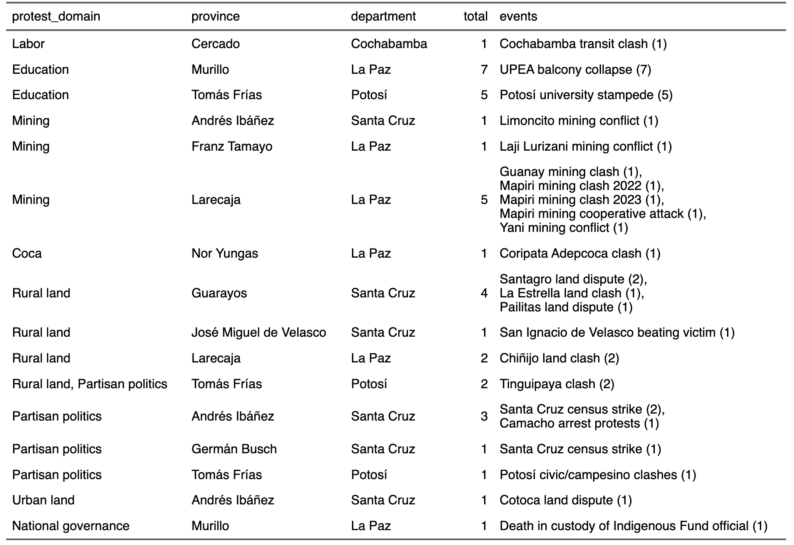

Conflict deaths in Bolivia, 2023–24
Eleven people have died in social movement-related violence in Bolivia since the beginning of 2023, ten of them the victims of violence carried out by other social groups. These conflicts pitted rural community members against miners, as well as disputes within the same profession, be it mining cooperatives, urban transit drivers, or rival claimants to rural land. Only one death, in January 2023, was caused by security forces, who fired a projectile into the eye of a bystander during raucous protests over the arrest of right-wing governor Luis Fernando Camacho.
In addition, the government of Luis Arce attributed four deaths from medical causes to the side effects of pro-Evo Morales blockades in January 2024. (Per our codebook, we record such collateral consequences but exclude them from other analysis.)
Deadly protest events, January 2023–August 2024
The recent events are as follows:
Camacho arrest protests: The December 28 arrest of Santa Cruz’s governor (and ex-presidential candidate) Luis Fernando Camacho touched off immediate protests in Santa Cruz de la Sierra, the regional capital. Following a one-day airport takeover, members of Camacho’s Civic Movement alternated between daytime blockades and nighttime property destruction. On New Year’s Day, police fired a projectile—likely a tear-gas canister—into the eye of Edwin Chávez Durán. The man enduring no fewer than seven surgeries over the next two weeks before succumbing to a heart attack on January 13.
Mapiri mining clash: Amid negotiations upon the filing of mining permits for a mine site located on the Merque river, confrontations began between prospective miners at the site and community members. The mining firm, Minera La Deseada, is described as Chilean, and the workers involed as arriving outsiders, some or all from Caranavi, according to the OTB of Mapiri, led by Ruddy Salcedo. Salcedo describes a Chilean business owner as present at the start of the confrontation, urging them to begin work by force. Community members occupied the disputed site, waiting for police to arrive. In the ensuing confrontation, stones, dynamite, and firearms were used, wounding ten people and killing Jhilmer Cuele Sompero. Community struggles challenging the La Deseada Mine have been ongoing for years; a 2020 mobilization shows leaders describing a five year struggle up to that point. In 2020, they were demanding the enforcement of a ruling by the national mining authority AJAM.
Limoncito mining conflict: On March 1, police accompanied an inspection visit by AJAM to document the stone-mining operation of the Dracruz company, in Limoncito, El Torno municipality. The delegation was confronted by mine workers who launched rockets and otherwise attacked the inspectors and police. Amid a retreat, Sub-Lieutenant Ronald Choque Mamani suffered a cardio-pulmonary arrest and collapsed to the ground. (Initial reports of bullet wounds to the officer proved unfounded.) He could not be revived. Five men were taken into custody for investigation by the FELCC and prosecutors [@AutopsiaConfirmaQue2023]. Subsequent inspection on March 10 revealed an unpermitted mining operation extending over 16 hectares of municipal land. Police then took both heavy equipment and documentation from the company . Local residents had complained of the operation, and have an ongoing campaign against other illegal mining operations.
Santagro rural land dispute: In El Puente municipality of Santa Cruz, conflict flared up between members of the Intercultural farmer federation, who established settlements there in December 2023, and the employees of the Santagro soy producing company, which works on the land. The armed confrontation on March 30 claimed the lives of two men, Francisco Morales and Jorge Pérez.
Cotoca land dispute: During a confrontation between established residents and squatters in Cotoca, Herland Salinas Añez was stabbed multiple times, first by a machete and then by a short blade knife (arma blanca) and killed. Several others suffered machete and bullet wounds during the confrontation. Witness reports describe the confrontation as continuing over several days. Police arrested 25 to 33 people, whom they investigated for the illegal land occupation. Per a more detailed report, the housing takeover was sudden and carried out by a group arriving in a van, making the squatters the attackers.
Laji Lurizani mining conflict: Wilmer Chambi Salcedo, 25, was shot and died while in an ambulance transporting him from Apolo to La Paz. He was one of four wounded in a conflict in the Santa Rosa community in the Laja sector of Apolo on September 13, 2023. The violence resulted from a conflict between illegal miners and community members in the protected Parque Nacional y Área Natural de Manejo Integrado Madidi (PN-ANMI Madidi). On September 15, the Autoridad Jurisdiccional Administrativa Minera (AJAM) reaffirmed that no mining rights were granted anywhere in the protected area. The same day, police arrived in the conflict zone and took control of the Laji Lurizani community. Bitza Delgado, the wife of the deceased Wilmer Chambi Salcedo, demanded that the authorities move to find those responsible for his death.
The death marked a continued worsening of violence due to mining conflicts in the Apolo region of northern La Paz. Illegal and informal mining thrives in the region. On September 18, community members of Laji Lurizani arrived in La Paz’s Plaza Murilo to protest the activities of illegal miners and their backers, and the absence of the state. Residents testified and presented photographic evidence of how illegal miners force them under threat of violence to allow them to do what they want in the area.
Pailitas land dispute: A week of armed confrontation between interculturales and peasants disputing land rights in the Forest Reserve of the Ascensión de Guarayos province resulted in the death of the intercultural Félix Ribera Bellido (23) of San Julían and the injury of 14 others. The death occurred early on the morning of December 2, when a conflict erupted between the communities of Pailitas and Santa María (in the Los Londras area). On December 6, the leader of the interculturales of San Julían, Tito Rokas, threatened the death of landowners in the province, claiming they were responsible for the violence. President Luis Arce announced that the violence would not be tolerated and summoned an emergency meeting of ministers to analyze the land conflict and propose structural solutions. The director of the National institute of Agrarian Reform (INRA) emphasized however that the lands being fought over were in fact property of the state, as all of the properties lie withing the Gurayos Forest Reserve. The Bolivian Ombudsman’s Office condemned the violence and called upon all actors to lower the temperature and to find peaceful solutions to the conflict. On January 16, 2024, Heber Sixto Canaza Sacaca (47), one of the leaders of the San Julían syndicate, was charged with homicide, for his role in inciting the violence on December 2, and for land trafficking, due to his promise to deliver properties in the municipality to intercultural groups. He was apprehended and taken into custody on January 15 and transferred to Santa Cruz by the FELCC. Sixto Canza had also been previously involved in another armed conflict in the Las Londras area in 2021, during which a group of journalists, police, and businessmen were kidnapped and tortured.
Cochabamba transit clash: A taxi driver suffered blunt force trauma while being attacked by drivers of a rival union of drivers disputing their line. One report indicates he and his brother were dragged out of their vehicle and held in another, possibly suffering the wound when jumping out of the vehicle. A doctor described blunt trauma inflicted by a large stone.
Guanay mining clash: Conflict among miners resulted in two injuries (both with metal shrapnel) and the trauma-induced heart attack of Mauricio Soliz Miranda.
Yani mining conflict: National Police intervened in the Yani community of Sorata municipality where two groups of cooperative miners were in open confrontation. This confrontation included injuries from firearms suffered inside the mine the night of July 25. Sent to accompany officials from AJAM and to de-escalate the conflict, the police were confronted by members of one side of the dispute. Reportedly, the miners threw rocks and dynamite at the arriving police, and set the hill on fire. Caught in the flames, two police officers suffered severe burns to 70% and 80% of their bodies respectively. One of those burned, Fabricio Reynoso Gutiérrez, succumbed to his injuries in a La Paz hospital. Altogether, four police were hospitalized. Two alleged perpetrators were arrested and held in preventative detention. One party to the dispute was the Cooperativa Minera “Señor de Mayo”, seemingly the side complaining of illegal occupation of their stake, while the other side (per a social media post circulated by Señor de Mayo) is known as Hijos de Ingenio. The latter allege further violence by Hijos de Ingenio, including a shooting on the following day.
The pattern of violence under President Luis Arce has shifted from past conflict
As we near the end of Luis Arce’s fourth year as president, it’s now clear that political violence in Bolivia has taken a new shape. The left–right conflict, which claimed 38 lives during the 2019 political crisis (most of them shot dead during grassroots protests against the newly installed Áñez government), has receded in violence. Five deaths occurred from this longstanding divide.
{kind=link}
Public protest in Bolivia remains active as ever, but there has been little deadly violence between police and people protesting the government. Only two people have been killed in sociopolitical conflicts by security forces, a jailed official who died after mistreatment and a protester wounded by a less-lethal munition. Only one presidency saw less lethal violence by Bolivian security forces since 1982: Eduardo Rodríguez’s eight-month interim government. Comparable restraint was shown under the leadership of Hernán Siles Zuazo (1982–85) and Carlos Mesa (2003–05).
Instead, it is local and inter-movement conflicts that are taking the deadliest toll: 32 deaths in four years. Additionally, all three of the deaths of state security forces came in instances where the Arce government intervened to stop violence between conflicting communities of its own supporters, in conflicts over coca union leadership in Apolo, over mining in Sorata and El Torno.
With the exception of two university student government-related tragedies, in Potosí and El Alto, these are competitions over land, employment, and environment. These conflicts are the dark side of a literal gold rush in northwest Bolivia and a fundamentally similar rush for rural land and space for housing on the urban periphery. Asserting collective claims to land or mining rights is not new in Bolivia, but disputes among competing groups have become increasingly violent in a handful of regions, with mining collectives, agribusiness companies, and intercultural settlers increasingly turning to firearms in clashes to defend their claims. These groups are part of large economic strata, notably cooperative miners and intercultural peasants, who participate in the grassroots coalition behind Bolivia’s governing party, complicating the government’s management of such conflicts. Meanwhile the administrative agencies, AJAM for mining and INRA for land frequently find themselves asserting that one even both sides of these conflicts have a legal right to disputed territory.

Relative restraint by the Arce government in the use of deadly force has been a welcome change from the massacres of the interim government. The remaining question is whether the Movement Towards Socialism can adjudicate disputes over land and calm local tensions within its grassroots base.
Click here for an interactive directory of directory of all deaths recorded in the dataset. Type “Arce” into the search bar for presidents to just see events during the Arce administration.